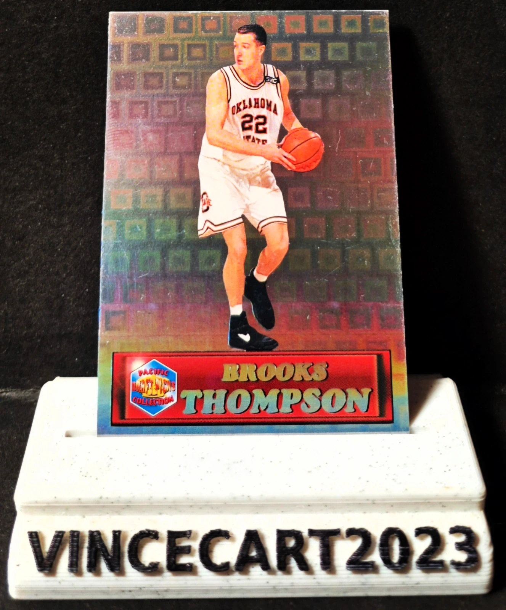

Carte NBA Brooks Thompson Pacific Prisms 1994 #61 – Rookie – Oklahoma State / Orlando Magic
1,0 €
Carte officielle Pacific Prisms Collection 1994 #61 de Brooks Thompson, ancien meneur d'Oklahoma State, sélectionné au 1er tour de la Draft NBA 1994 par le Orlando Magic.
🏀 Joueur : Brooks Thompson
📅 Année : 1994
🏷️ Éditeur : Pacific Prisms Collection
🔢 Numéro : #61
⭐ Carte Rookie / Draft
📸 État conforme aux photos (recto/verso).
Une belle carte vintage des années 90, idéale pour les collectionneurs de NBA, de rookies ou de la collection Pacific.
📦 Envoi rapide et soigné sous protection (penny sleeve
Disponibilité à confirmer sur Vinted.